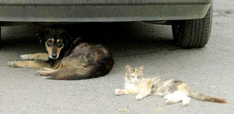
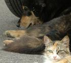

ГРУЗИЯ - РОССИЯ: СВОБОДА ДРУГ ОТ ДРУГА

Отношения Грузии и России после развала СССР до боли напоминают классический развод супругов со всеми вытекающими отсюда последствиями. Первая стадия – никто (или по крайней мере, одна из сторон) еще не верит в то, что семейный очаг безнадежно остыл и продолжает надеяться… Вторая стадия – дело реально доходит до развода и раздела имущества. И, наконец, стадия третья – судебный процесс с обильным выливанием ушатов грязи на головы когда-то любящих и любимых.
Наверное, когда отношения заходят в глухой тупик, виноваты в той или иной степени бывают обе стороны. Кто-то больше, кто-то меньше. В Грузии не могут простить Москве Абхазию и Южную Осетию. Москва не скрывает раздражения по поводу смены партнеров и ориентации со стороны Тбилиси. И действует по схеме «вернись, я все прощу». Вернее, действовала. В последнее время уже явно чувствуется неприкрытая личная неприязнь Кремля к первому лицу Грузии. А когда дело доходит до личной неприязни, то о компромиссах говорить не приходится.
Увы, но отношения наших стран докатились до последней стадии… Правда, злопыхатели утверждают, что худшее еще впереди. Мол, один из бывших поймает другого в темном переулке и тогда расправа будет короткой, но очень чувствительной. Однако, исходя из того, что в качестве судей и свидетелей уже выступает почти все мировое сообщество, хочется надеяться, что развод таки закончится цивильно.
Самым простым выходом кажется переход на абсолютно рыночные отношения без тени политики. Холодная война и блокада со стороны одной, пусть и крупной державы никогда особо результативной не была. Вспомнить хотя бы блокаду Кубы Америкой. Режим Кастро живет и здравствует. Остров Свободы осваивают канадцы, европейцы.
Кроме того, действия России способствовали росту рейтинга «национального движения» на последних муниципальных выборах в Грузии. И абсолютно непонятна ставка на «соломенное пугало» в лице генерала Георгадзе. О популярности его партии «Справедливость» говорит хотя бы такой факт. Во время съездов «Справедливости» в Тбилиси любой желающий мог заработать 10-20 лари за пару часов. Просто надо было сидеть в зале, вовремя хлопать в ладоши и изображать массовку.
Вполне вероятно, что Москва уже в следующем году согласится на вывод своих миротворцев из Абхазии и Южной Осетии или же согласится на смешанный формат. Поддержка Москвой Сухуми и Цхинвали от этого меньше не станет. Речь не идет о признании независимости непризнанных республик. В Москве вряд ли пойдут на это, но прибавить головной боли для Тбилиси вполне смогут.
Сентябрь-октябрь стал месяцем взрыва целой серии мин в российско-грузинских отношениях. И, к сожалению, их еще может быть достаточно впереди.
Конкретных ответов на вопрос «что делать» - нет. Но так или иначе договариваться надо. Зачтется обеим сторонам.
РОССИЯ СПОСОБСТВУЕТ
Эмбарго России, конечно же, ударило по Грузии. Но ведь и помогло! Без санкций Москвы разве задвигались бы наши министры и бизнесмены, так активно продвигая национальную продукцию на мировые рынки? Вряд ли. Бескрайний российский рынок расхолаживал и отуплял. Ну зачем везти вино и минералку куда-нибудь в Монголию, если в той же Рязанской области ее выпьют намного больше?! Зато теперь наши виноделы станут больше интересоваться международным туризмом и маркетингом. Спасибо санитару Онищенко!
Недавно мои коллеги из солнечного Баку, приехав в Тбилиси, чуть ли не каждый день с удовольствием дегустировали вино. Цель приезда – посмотреть, насколько плохо стало жить в Грузии после российской блокады. Оказалось, что жить пока можно, правда «грузины стали больше пить вина»…
«Раньше я сам вино не пил», - признался один из азербайджанских коллег, - «но теперь интересно стало, такая реклама идет по российским каналам!» Напоследок они увезли пару ящиков вина для страждущих друзей…
Кстати о южнокавказской интеграции. Блокада блокадой, но вряд ли в магазинах Грузии станет меньше российских товаров. Той же водки, кондитерской или колбасной продукции. Просто ее будут завозить из Азербайджана. Торговые связи с восточным соседом еще чуть-чуть окрепнут. То же самое с авиасообщением. Как в Россию, так и из России народ летать будет. Через Ереван и Баку, Киев и Франкфурт.
Кстати, не исключено, что некоторые российские товары со временем в Грузии найдут замену. Производители Азербайджана, Армении, Турции, Ирана, Украины, Молдовы и других стран с удовольствием займут нишу, как только в ней образуется хоть небольшая брешь.
Увеличение грузо- и пассажироперевозок в регионе потребует расширения соответствующей инфраструктуры, может быть, приведет к созданию новых транзитных маршрутов, региональных зон свободной торговли.
В течение этого года активно растет товарооборот между Грузией и странами региона. Баку и Ереван корректно отмалчиваются относительно грузино-российского противостояния. А может просчитывают возможные последствия кремлевской опалы …
ПУТИН И ИВАНОВ:
Ну разве могла мечтать Грузия о той бесплатной рекламе, которую ей устроили президент и министр обороны России! Нет, конечно. «Бандитская страна», в которой правят «последователи Берии». «Фальсифицированное» вино и минералка, которую на протяжении десятков лет пила огромная Россия. Депортация по национальному признаку сотен человек. Мне кажется, что в Москве блестяще поработали, создав столь привлекательные для Запада рекламные фишки.
А поскольку на Западе реклама действительно двигатель торговли, то и тамошний бизнес в ближайшее время может более активно заинтересоваться настолько активно рекламируемой территорией под лейблом «Georgia».
И, кстати, порядком поднадоевшие слухи о развале СНГ могут, наконец, стать реальностью. Опять-таки, благодаря России в роли главного героя выступит Грузия. Стержнем СНГ всегда была Москва. Желание сохранить зоны и рычаги влияния толкали Кремль к несколько «дотационным» отношениям с бывшими братскими республиками. Но ведь избавившись от лишних дотаций и лишних затрат на призрачность непонятного содружества, сама Россия станет более свободной.
Ираклий Чихладзе
30-10-06
КТО ВИНОВАТ?
Наверное, когда отношения заходят в глухой тупик, виноваты в той или иной степени бывают обе стороны. Кто-то больше, кто-то меньше. В Грузии не могут простить Москве Абхазию и Южную Осетию. Москва не скрывает раздражения по поводу смены партнеров и ориентации со стороны Тбилиси. И действует по схеме «вернись, я все прощу». Вернее, действовала. В последнее время уже явно чувствуется неприкрытая личная неприязнь Кремля к первому лицу Грузии. А когда дело доходит до личной неприязни, то о компромиссах говорить не приходится.
Увы, но отношения наших стран докатились до последней стадии… Правда, злопыхатели утверждают, что худшее еще впереди. Мол, один из бывших поймает другого в темном переулке и тогда расправа будет короткой, но очень чувствительной. Однако, исходя из того, что в качестве судей и свидетелей уже выступает почти все мировое сообщество, хочется надеяться, что развод таки закончится цивильно.
ЧТО ДЕЛАТЬ?
Самым простым выходом кажется переход на абсолютно рыночные отношения без тени политики. Холодная война и блокада со стороны одной, пусть и крупной державы никогда особо результативной не была. Вспомнить хотя бы блокаду Кубы Америкой. Режим Кастро живет и здравствует. Остров Свободы осваивают канадцы, европейцы.
Кроме того, действия России способствовали росту рейтинга «национального движения» на последних муниципальных выборах в Грузии. И абсолютно непонятна ставка на «соломенное пугало» в лице генерала Георгадзе. О популярности его партии «Справедливость» говорит хотя бы такой факт. Во время съездов «Справедливости» в Тбилиси любой желающий мог заработать 10-20 лари за пару часов. Просто надо было сидеть в зале, вовремя хлопать в ладоши и изображать массовку.
Вполне вероятно, что Москва уже в следующем году согласится на вывод своих миротворцев из Абхазии и Южной Осетии или же согласится на смешанный формат. Поддержка Москвой Сухуми и Цхинвали от этого меньше не станет. Речь не идет о признании независимости непризнанных республик. В Москве вряд ли пойдут на это, но прибавить головной боли для Тбилиси вполне смогут.
Сентябрь-октябрь стал месяцем взрыва целой серии мин в российско-грузинских отношениях. И, к сожалению, их еще может быть достаточно впереди.
Конкретных ответов на вопрос «что делать» - нет. Но так или иначе договариваться надо. Зачтется обеим сторонам.
РОССИЯ СПОСОБСТВУЕТ
ЮЖНО-КАВКАЗСКОЙ ИНТЕГРАЦИИ
Эмбарго России, конечно же, ударило по Грузии. Но ведь и помогло! Без санкций Москвы разве задвигались бы наши министры и бизнесмены, так активно продвигая национальную продукцию на мировые рынки? Вряд ли. Бескрайний российский рынок расхолаживал и отуплял. Ну зачем везти вино и минералку куда-нибудь в Монголию, если в той же Рязанской области ее выпьют намного больше?! Зато теперь наши виноделы станут больше интересоваться международным туризмом и маркетингом. Спасибо санитару Онищенко!
Недавно мои коллеги из солнечного Баку, приехав в Тбилиси, чуть ли не каждый день с удовольствием дегустировали вино. Цель приезда – посмотреть, насколько плохо стало жить в Грузии после российской блокады. Оказалось, что жить пока можно, правда «грузины стали больше пить вина»…
«Раньше я сам вино не пил», - признался один из азербайджанских коллег, - «но теперь интересно стало, такая реклама идет по российским каналам!» Напоследок они увезли пару ящиков вина для страждущих друзей…
Кстати о южнокавказской интеграции. Блокада блокадой, но вряд ли в магазинах Грузии станет меньше российских товаров. Той же водки, кондитерской или колбасной продукции. Просто ее будут завозить из Азербайджана. Торговые связи с восточным соседом еще чуть-чуть окрепнут. То же самое с авиасообщением. Как в Россию, так и из России народ летать будет. Через Ереван и Баку, Киев и Франкфурт.
Кстати, не исключено, что некоторые российские товары со временем в Грузии найдут замену. Производители Азербайджана, Армении, Турции, Ирана, Украины, Молдовы и других стран с удовольствием займут нишу, как только в ней образуется хоть небольшая брешь.
Увеличение грузо- и пассажироперевозок в регионе потребует расширения соответствующей инфраструктуры, может быть, приведет к созданию новых транзитных маршрутов, региональных зон свободной торговли.
В течение этого года активно растет товарооборот между Грузией и странами региона. Баку и Ереван корректно отмалчиваются относительно грузино-российского противостояния. А может просчитывают возможные последствия кремлевской опалы …
ПУТИН И ИВАНОВ:
ГЛАВНЫЕ ИМИДЖМЕЙКЕРЫ ГРУЗИИ
Ну разве могла мечтать Грузия о той бесплатной рекламе, которую ей устроили президент и министр обороны России! Нет, конечно. «Бандитская страна», в которой правят «последователи Берии». «Фальсифицированное» вино и минералка, которую на протяжении десятков лет пила огромная Россия. Депортация по национальному признаку сотен человек. Мне кажется, что в Москве блестяще поработали, создав столь привлекательные для Запада рекламные фишки.
А поскольку на Западе реклама действительно двигатель торговли, то и тамошний бизнес в ближайшее время может более активно заинтересоваться настолько активно рекламируемой территорией под лейблом «Georgia».
И, кстати, порядком поднадоевшие слухи о развале СНГ могут, наконец, стать реальностью. Опять-таки, благодаря России в роли главного героя выступит Грузия. Стержнем СНГ всегда была Москва. Желание сохранить зоны и рычаги влияния толкали Кремль к несколько «дотационным» отношениям с бывшими братскими республиками. Но ведь избавившись от лишних дотаций и лишних затрат на призрачность непонятного содружества, сама Россия станет более свободной.
Ираклий Чихладзе
30-10-06